[TOC]
1.简述DDL,DML,DCL,DQL，并且说明mysql各个关键字查询时候的先后顺序 1.1 简述DDL,DML,DCL,DQL
1.2 说明mysql各个关键字查询时候的先后顺序 关键字keyword组成子句clause，多条clause组成整个语句
示例：
select * #SELECT子句
说明：一组SQL语句由三个子句构成，SELECT ,FROM 和WHERE时关键字
获取SQL 命令使用帮助：https://dev.mysql.com/doc/refman/8.0/en/sql-statements.html
mysql各个关键字执行顺序如下：
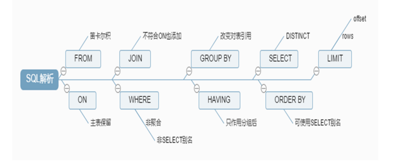
查询执行路径中的组件：查询缓存、解释器、预处理器、优化器、查询执行引擎、存储引擎
select语句的执行流程：
2.自行设计10个sql查询语句，需要用到关键字[GROUP BY/HAVING/ORDER BY/LIMIT]，至少同时用到两个。 示例1：
1 2 3 4 5 6 7 8 9 10 11 #查询teachers表中age> 20 ，男女的人数> select count (* ),gender from teachers where age > 20 group by gender;+ | count (* ) | gender | + | 2 | F | | 2 | M | + 2 rows in set (0.000 sec)
示例2：
1 2 3 4 5 6 7 8 9 10 11 #查询teachers表中age< 90 ，按age降序排序> select * from teachers where age < 90 order by age desc ;+ | TID | Name | Age | Gender | + | 3 | Miejue Shitai | 77 | F | | 1 | Song Jiang | 45 | M | | 5 | xiaohexie | 18 | F | + 3 rows in set (0.000 sec)
示例3：
1 2 3 4 5 6 7 8 9 #查询teachers表中最大年纪的所有信息> select * from teachers order by age desc limit 1 ;+ | TID | Name | Age | Gender | + | 2 | Zhang Sanfeng | 94 | M | + 1 row in set (0.000 sec)
示例4：
1 2 3 4 5 6 7 8 9 10 #查询students表中男女的平均年龄> select sum (age)/ count (* ),gender from students group by gender;+ | sum (age)/ count (* ) | gender | + | 19.0000 | F | | 33.0000 | M | + 2 rows in set (0.000 sec)
示例5：
1 2 3 4 5 6 7 8 9 10 11 12 13 #查询students表中年龄降序排序前五位的信息> select * from students order by age desc limit 5 ;+ | StuID | Name | Age | Gender | ClassID | TeacherID | + | 25 | Sun Dasheng | 100 | M | NULL | NULL | | 3 | Xie Yanke | 53 | M | 2 | 16 | | 6 | Shi Qing | 46 | M | 5 | NULL | | 13 | Tian Boguang | 33 | M | 2 | NULL | | 4 | Ding Dian | 32 | M | 4 | 4 | + 5 rows in set (0.000 sec)
示例6：
1 2 3 4 5 6 7 8 9 10 11 12 #查询students表每个班的人数，只显示人数大于3 的classid> select classid,count (* ) from students group by classid having count (* )> 3 ;+ | classid | count (* ) | + | 1 | 4 | | 3 | 4 | | 4 | 4 | | 6 | 4 | + 4 rows in set (0.000 sec)
示例7：
1 2 3 4 5 6 7 8 9 10 11 12 13 14 #查询students表每个班的人数，只显示人数大于2 的classid，按升序排序> select classid,count (* ) from students group by classid having count (* )> 2 order by count (* );+ | classid | count (* ) | + | 7 | 3 | | 2 | 3 | | 6 | 4 | | 1 | 4 | | 4 | 4 | | 3 | 4 | + 6 rows in set (0.000 sec)
示例8：
1 2 3 4 5 6 7 8 9 10 11 12 13 14 #查询students表age< 25 gender= 'M' 的信息，按升序排序> select * from students where age < 25 having gender= 'M' order by age;+ | StuID | Name | Age | Gender | ClassID | TeacherID | + | 15 | Duan Yu | 19 | M | 4 | NULL | | 16 | Xu Zhu | 21 | M | 1 | NULL | | 1 | Shi Zhongyu | 22 | M | 2 | 3 | | 2 | Shi Potian | 22 | M | 1 | 7 | | 11 | Yuan Chengzhi | 23 | M | 6 | NULL | | 18 | Hua Rong | 23 | M | 7 | NULL | | 23 | Ma Chao | 23 | M | 4 | NULL | +
示例9：
1 2 3 4 5 6 7 8 9 10 11 12 #查询students表平均年龄小于22 的班级> select classid,avg (age) from students group by classid having avg (age)< 22 ;+ | classid | avg (age) | + | 1 | 20.5000 | | 3 | 20.2500 | | 6 | 20.7500 | | 7 | 19.6667 | + 4 rows in set (0.000 sec)
示例10：
1 2 3 4 5 6 7 8 9 10 11 #查询students表classid= 2 的所有信息，按年龄降序排序显示> select * from students where classid= 2 order by age; + | StuID | Name | Age | Gender | ClassID | TeacherID | + | 1 | Shi Zhongyu | 22 | M | 2 | 3 | | 13 | Tian Boguang | 33 | M | 2 | NULL | | 3 | Xie Yanke | 53 | M | 2 | 16 | + 3 rows in set (0.000 sec)
3.xtrabackup备份和还原数据库练习 利用xtrabackup8.0进行完全备份和增量备份以及还原MySQL8.0
3.1 xtrabackup进行完全备份和还原 3.1.1下载并安装xtrabackup 1 2 3 4 5 6 7 8 9 10 11 # percona下载地址： # percona-xtrabackup下载链接： # 安装percona-xtrabackup
3.1.2 备份和还原过程 1 2 3 4 5 6 7 8 9 10 11 12 13 14 15 16 17 18 19 20 21 22 23 24 25 26 27 28 29 30 31 32 33 34 1 在原主机上做完全备份到/backupmysql> show databases;
3.2 xtrabackup进行增量备份和还原 1 2 3 4 5 6 7 8 9 10 11 12 13 14 15 16 17 18 19 20 21 22 23 24 25 26 27 28 29 30 31 32 33 34 35 36 37 38 # 安装percona-xtrabackup # 备份过程 mysql> insert teachers (name,age,gender) values('aa' ,10,'M' ); # 还原过程
4.实现mysql主从复制，主主复制和半同步复制 4.1 mysql主从复制 1 2 3 4 5 6 7 8 9 10 11 12 13 14 15 16 17 18 19 20 21 22 23 24 25 26 27 28 29 30 31 32 33 34 35 36 37 38 39 40 41 42 43 44 45 46 47 48 49 50 51 52 53 54 55 56 57 58 59 60 61 62 63 64 65 66 67 68 69 70 71 72 73 74 75 76 77 78 79 80 81 82 83 84 85 86 87 88 89 90 91 92 93 94 95 96 97 98 99 100 101 102 103 104 105 106 107 108 109 110 111 112 113 114 115 116 117 # 主节点 # 安装MySQL # 修改master主节点的配置 # 查看二进制文件和位置 mysql> show master logs; # 创建复制用户 mysql> grant replication slave on *.* to repluser@'10.0.0.%' identified by '123456' ; # MySQL8.0需要分成下面两步实现 mysql> create user repluser@'10.0.0.%' ; mysql> grant replication slave on *.* to repluser@'10.0.0.%' ; # 从节点 # 安装MySQL # 修改从节点的配置
验证：
1 2 3 4 5 6 7 8 9 10 11 12 13 14 15 16 17 18 19 20 21 22 23 24 25 26 27 28 29 30 # 在master上修改数据 #
4.2 实现主主复制 1 2 3 4 5 6 7 8 9 10 11 12 13 14 15 16 17 18 19 20 21 22 23 24 25 26 27 28 29 30 31 32 33 34 35 36 37 38 39 40 41 42 43 44 45 46 47 48 49 50 51 52 53 54 55 56 57 58 59 60 61 62 63 64 65 66 67 68 69 70 71 72 73 74 75 76 77 78 79 # 在第一个master节点上实现 # 在第二个master节点上实现 # 在第一个master节点上实现 # 两个节点上分别插入数据 # 在第一个节点上执行 # 在第二个节点上执行
4.3 半同步复制 示例：在mariadb上实现半同步复制
1 2 3 4 5 6 7 8 9 10 11 12 13 14 15 16 17 18 19 20 21 22 23 24 25 26 27 28 29 30 31 32 33 34 35 36 37 38 39 40 41 42 43 44 45 46 47 48 49 50 51 52 53 54 55 56 57 58 59 60 61 62 63 64 65 66 67 68 69 70 71 72 73 74 75 76 77 78 79 80 81 82 83 84 85 86 87 88 89 90 91 92 93 94 95 96 97 98 99 100 101 102 103 104 105 106 107 108 109 110 111 112 113 114 115 116 117 118 119 120 121 122 123 124 125 126 127 128 129 130 131 132 133 134 135 136 137 138 139 140 141 142 143 144 145 146 147 148 149 150 151 152 153 154 155 156 157 158 159 160 161 162 163 164 165 166 167 168 169 170 171 172 173 174 175 176 177 178 179 180 181 182 183 184 185 186 187 188 189 190 191 192 193 194 195 196 197 198 199 200 201 202 203 204 205 206 207 208 209 210 211 212 213 214 215 216 217 218 219 220 221 222 223 224 225 226 227 228 229 230 231 232 233 234 235 236 237 238 239 240 241 242 243 244 245 # 查看插件文件 # master服务器10.0.0.4上配置 # 创建复制用户 mysql> grant replication slave on *.* to repluser@'10.0.0.%' identified by '123456' ; # MySQL8.0需要分成下面两步实现 mysql> create user repluser@'10.0.0.%' identified by '123456' ; mysql> grant replication slave on *.* to repluser@'10.0.0.%' ; # 备份数据 # 复制到从服务器上 # slave1服务器配置 # 重启服务 # 将恢复主服务器上备份的数据恢复进行恢复 # slave2服务器10.0.0.128配置 # 重启服务 # 将恢复主服务器上备份的数据恢复进行恢复 # 主服务器 # 测试 # 在master实现，创建数据库，立即成功 # 在所有salve节点实现，停止复制线程 # 在master实现，创建数据库，等待3S成功 # 在任意一个salve节点实现，恢复复制线程 # 在master实现，创建数据库，立即成功 # 在所有从节点停止同步线程，在主节点可以看到以下日志信息
5.用mycat实现mysql的读写分离 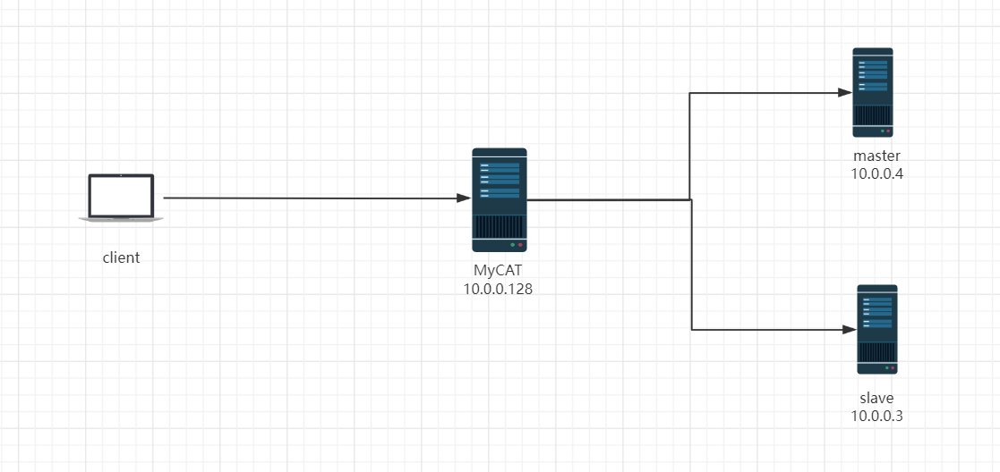
5.1 主机环境： 1 2 3 mycat-server 10.0.0.128 CentOS8.5
关闭selinux和防火墙
1 2 3 4 [21:37:52 root@rocky ~]#systemctl stop firewalld
5.2 创建MySQL主从数据库 1 2 3 4 5 6 7 8 9 10 11 12 13 14 15 16 17 18 19 20 21 22 23 24 25 26 27 28 29 30 31 32 33 34 35 36 37 38 39 40 41 42 43 44 45 46 47 48 49 50 51 52 53 54 55 56 57 58 59 60 61 62 63 64 65 66 67 68 69 70 71 72 73 74 75 76 77 78 79 80 81 82 83 84 85 86 87 88 89 90 91 # mysql> grant replication slave on *.* to repluser@'10.0.0.%' identified by '123456' ; #
5.3 在MySQL代理服务器上10.0.0.128上安装mycat并启动 mycat下载地址：
http://dl.mycat.org.cn/
http://mycatone.top/
https://github.com/MyCATApache/Mycat-Server
1 2 3 4 5 6 7 8 9 10 11 12 13 14 15 16 17 18 19 20 21 22 23 24 25 26 27 28 29 30 31 32 33 34 35 36 37 38 39 40 41 42 43 44 45 46 47 48 49 50 51 52 53 54 55 56 57 58 59 60 61 62 63 64 65 66 67 68 69 70 71 72 73 74 75 76 77 78 79 80 81 82 83 84 85 86 87 88 89 90 91 # 安装java环境 # 下载并安装 # 配置环境变量 # 启动mycat # 注意：此步骤启动较慢，需要等一会儿，另外如果内存太小会导致无法启动 # 可以看到打开多个端口，其中8066端口用于连接mycat # 查看日志，确认成功，可能需要等一会才能拿看到成功的提示 # 用默认密码123456来连接mycat
5.4 在mycat服务器上修改server.xml文件配置mycat的连接信息 1 2 3 4 5 6 7 8 9 10 11 12 13 14 15 [11:38:48 root@localhost ~]#vim /apps/mycat/conf/server.xml # 删除注释，并修改下面行的8066为3306
5.5 修改schema.xml实现读写分离策略 1 2 3 4 5 6 7 8 9 10 11 12 13 14 15 16 17 18 19 20 21 22 23 24 25 26 27 28 29 30 31 32 33 34 35 36 37 38 39 40 41 42 43 [07:58:27 root@localhost ~]#vim /apps/mycat/conf/schema.xml# # 注意大小写 # 最终文件内容 # 重启启动mycat
注意：要保证使用root/123456权限成功登录10.0.0.4和10.0.0.3机器上面的mysql数据库。同时也要授权mycat机器能使用root/123456权限成功登录10.0.0.4和10.0.0.3机器上面的mysql数据库否则会导致登录mycat后，对数据库和表的操作失败。
示例：schema.xml
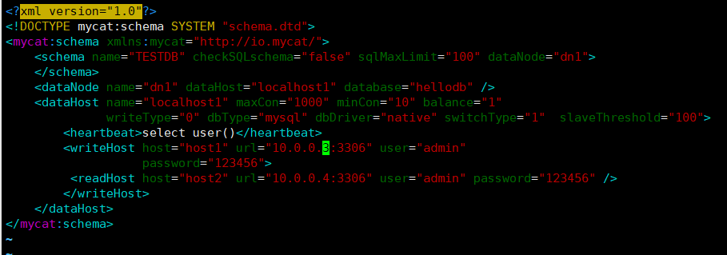
5.6 在后端主服务器上创建用户并对mycat授权 1 2 3 # 在master上创建用于mycat连接的admin用户
5.7 在主机上连接并测试 1 2 3 4 5 6 7 8 9 10 11 12 13 14 [21:14:39 root@ROOT-DNS ~]#mysql -uroot -p123456 -h 10.0.0.128 TESTDB
5.8 通过查看通用日志确认实现读写分离 在mariadb上查看通用日志：
1 2 3 4 MariaDB [(none)]> show variables like 'general_log'; #查看日志是否开启
在主和从服务器上分别开启通用日志，查看读写分离
1 2 3 4 5 6 [21:56:26 root@mysql-master ~]#vim /etc/my.cnf.d/mariadb-server.cnf
验证结果：
1 2 3 4 5 6 7 8 9 10 11 12 13 14 15 16 17 18 19 20 # 在客户端上执行下面两条sql语句 # 主节点上10.0.0.4查看通用日志 # 从节点上10.0.0.3查看通用日志
5.9 停止从节点，mycat自动调度至主节点 1 2 3 4 5 6 7 8 9 10 11 12 13 14 15 [22:11:01 root@mysql-slave ~]#systemctl stop mariadb# 停止主节点后，mycat不会自动调度写请求至从节点，查询也不行
6.实现openvpn部署，并且测试通过，输出博客或者自己的文档存档。 6.1 准备阿里云网络实验环境 1 2 3 4 5 6 7 8 9 10 11 12 13 14 15 16 17 18 19 20 21 22 23 24 25 26 27 1 阿里云创建专有网络
修改安全组规则：
6.2 环境：局域网OpenVPN实战环境 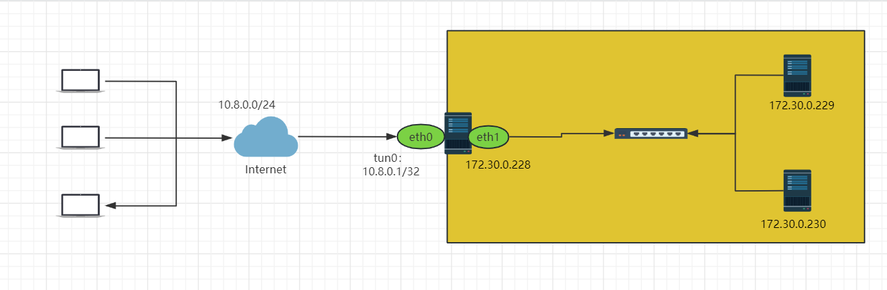
1 2 3 4 5 6 7 8 9 10 11 12 13 14 15 共四台主机
6.2 安装OpenVPN软件包 6.2.1 查看版本 6.2.1.1 查看官网版本OpenVPN版本 https://openvpn.net/community-downloads/
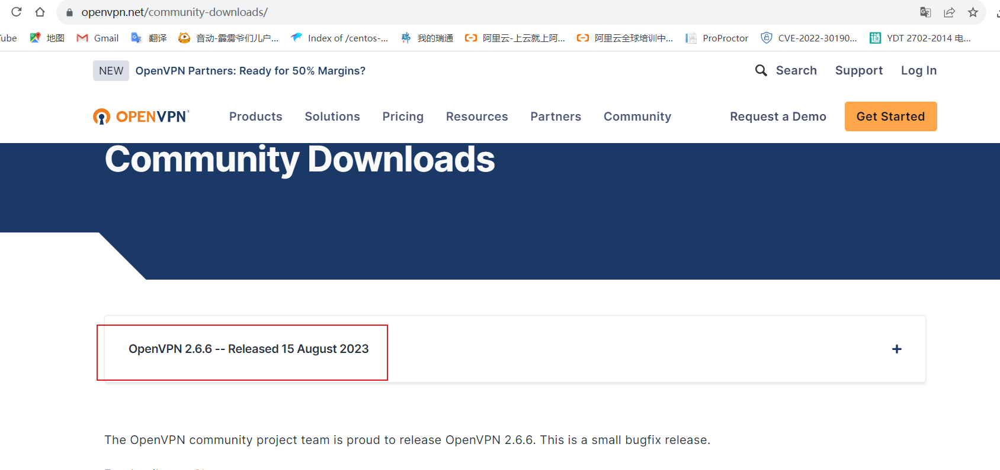
6.2.1.2 在不同OS上查看 范例：rocky8.5查看OpenVPN版本
1 2 3 4 5 6 7 8 9 10 [root@openvpn-server yum.repos.d]# yum list openvpn
6.2.2 安装OpenVPN 后面环境以Rocky8.5上基于EPEL源安装OpenVPN
6.2.2.1 安装OpenVPN和证书工具 1 2 3 4 5 # 安装OpenVPN服务器端 # 安装证书管理工具
6.2.2.2 准备相关配置文件 #生成服务器配置文件
1 2 3 4 5 6 7 8 9 10 11 12 13 14 15 16 17 18 19 20 21 22 23 24 25 26 27 28 29 30 31 32 33 34 35 36 37 38 39 40 41 42 43 44 45 # 生成服务器配置文件 # 准备证书颁发相关文件 # 准备证书颁发相关变量的配置文件 # 建议修改给CA和OpenVPN服务器颁发的证书的有效期，可适当加长 # CA的证书默认有效期为10年，可以适当延长，比如：36500天 # set_var EASYRSA_CA_EXPIRE 3650 # 服务器证书默认有效期为825天，可以适当延长，比如：3650天 # set_var EASYRSA_CERT_EXPIRE 825
6.3 准备证书相关文件 6.3.1 初始化PKI和CA颁发机构环境 6.3.1.1 脚本easyrsa帮助用法 1 2 3 4 5 6 7 8 9 10 11 12 13 14 15 16 17 18 19 20 21 22 23 24 25 26 27 28 29 30 31 32 33 34 35 36 37 38 39 40 41 42 43 44 45 46 47 48 49 50 [root@openvpn-server ~]# cd /etc/openvpn/easy-rsa-server/3/
6.3.1.2 初始化PKI生成PKI相关目录和文件 1 2 3 4 5 6 7 8 9 10 11 12 13 14 15 16 17 18 19 20 21 22 23 24 25 26 27 28 29 30 31 32 33 34 35 36 [root@openvpn-server 3]# cd /etc/openvpn/easy-rsa-server/3/# 初始化数据，在当前目录下生成pki目录及相关文件
6.3.2 创建CA机构环境 1 2 3 4 5 6 7 8 9 10 11 12 13 14 15 16 17 18 19 20 21 22 23 24 25 26 27 28 29 30 31 32 33 34 35 36 37 38 39 40 41 42 43 44 45 46 47 48 49 50 51 52 53 54 55 56 57 58 59 60 61 62 63 64 65 66 67 68 69 70 71 72 73 74 75 76 77 78 79 80 81 82 83 84 85 86 87 88 89 90 91 92 93 94 95 96 97 98 99 100 101 102 103 104 105 106 107 108 109 110 111 112 113 114 115 116 117 118 119 120 121 122 123 124 125 126 127 128 129 130 131 132 133 134 135 136 137 138 139 140 141 142 143 144 145 146 147 148 149 150 151 152 153 154 [root@openvpn-server 3]# cd /etc/openvpn/easy-rsa-server/3/# 查看生成CA相关的文件 # 查看生成的自签名证书
6.3.3 创建服务端证书申请 1 2 3 4 5 6 7 8 9 10 11 12 13 14 15 16 17 18 19 20 21 22 23 24 25 26 27 28 29 30 31 32 33 34 35 36 37 38 39 40 41 42 43 44 45 46 47 48 49 50 51 52 53 54 55 56 [root@openvpn-server 3]# cd /etc/openvpn/easy-rsa-server/3# 创建服务器证书申请文件，其中server是文件前缀
6.3.4 颁发服务器端证书 6.3.4 查看颁发证书命令用法 1 2 3 4 5 6 7 8 9 10 11 [root@openvpn-server 3]# cd /etc/openvpn/easy-rsa-server/3/
6.3.4.2 颁发服务器端证书 1 2 3 4 5 6 7 8 9 10 11 12 13 14 15 16 17 18 19 20 21 22 23 24 25 26 27 28 29 30 31 32 33 34 35 36 37 38 39 40 41 42 43 44 45 46 47 48 # 将上面server.req的申请，颁发server类型的证书 # 第一个server表示证书的类型，第二个server表示请求文件名的前缀
6.3.4.3 验证结果 1 2 3 4 5 6 7 8 9 10 11 12 13 14 15 16 17 18 19 20 21 22 23 24 25 26 27 28 29 30 31 32 33 34 35 36 37 38 39 40 41 42 43 44 45 46 47 48 49 50 51 52 53 54 55 56 57 58 59 60 61 62 63 64 65 66 67 68 69 70 71 72 73 74 75 76 77 78 79 80 81 82 83 84 85 86 87 88 89 90 91 92 93 94 95 96 97 98 99 100 101 102 103 104 105 106 107 108 109 110 111 112 113 114 115 116 117 118 119 120 121 122 123 124 125 126 127 128 129 130 131 132 133 134 135 136 137 138 # 查看证书相关文件
6.3.5 创建Diffie-Hellman 密钥 6.3.5.1 Diffie-Hellman 算法说明 1 2 wiki参考链接：
6.3.5.2 创建Diffie-Hellman 密钥 1 2 3 4 5 6 7 8 9 10 11 12 13 14 15 16 17 18 19 20 21 22 23 24 25 26 [root@openvpn-server 3]# cd /etc/openvpn/easy-rsa-server/3/# 查看生成的文件
6.3.6 准备客户端证书环境 1 2 3 4 5 6 7 8 9 10 11 12 13 14 15 16 17 18 19 20 21 22 23 24 25 26 27 28 29 30 31 32 33 34 35 36 37 38 39 40 41 42 43 44 45 46 47 48 49 50 51 52 [root@openvpn-server 3]# cp -a /usr/share/easy-rsa/ /etc/openvpn/easy-rsa-client
6.3.7创建客户端证书申请 1 2 3 4 5 6 7 8 9 10 11 12 13 14 15 16 17 18 19 20 21 22 23 24 25 26 27 28 29 30 31 32 33 34 35 36 37 38 39 40 41 42 43 44 45 46 47 48 49 [root@openvpn-server 3]# cd /etc/openvpn//easy-rsa-client/3/# 生成客户端的证书申请 # 生成两个新文件
2.3.8 颁发客户端证书 1 2 3 4 5 6 7 8 9 10 11 12 13 14 15 16 17 18 19 20 21 22 23 24 25 26 27 28 29 30 31 32 33 34 35 36 37 38 39 40 41 42 43 44 45 46 47 48 49 50 51 52 53 54 55 56 57 58 59 60 61 62 63 64 65 66 67 68 69 70 71 72 73 74 75 76 77 78 79 80 81 82 83 84 85 86 87 88 89 90 91 92 93 94 95 96 97 98 99 100 101 102 103 104 105 106 107 108 109 110 111 112 113 114 115 116 117 118 119 120 121 122 123 124 125 126 127 128 129 130 131 132 133 134 135 136 137 138 139 140 141 142 143 144 145 146 147 148 149 150 151 152 153 154 155 156 157 158 159 160 161 162 163 164 165 166 167 168 169 170 171 172 173 174 175 176 177 178 179 180 181 182 183 184 185 186 187 188 189 190 191 192 193 194 195 196 197 198 199 200 201 202 203 204 205 206 207 208 209 210 211 212 213 214 215 216 217 218 219 220 221 222 223 224 [root@openvpn-server 3]# cd /etc/openvpn/easy-rsa-server/3/# 修改给客户端颁发的证书的有效期 # 建议修改给客户端颁发证书的有效期，可适当减少，比如：90天 # set_var EASYRSA_CERT_EXPIRE 825 # 颁发客户端证书
6.3.8 将CA和服务器证书相关文件复制到服务器相应的目录 1 2 3 4 5 6 7 8 9 10 11 12 [root@openvpn-server ~]# mkdir /etc/openvpn/certs
6.3.9 将客户端私钥和证书相关文件复制到服务器相应的目录
1 2 3 4 5 6 7 8 9 10 11 12 13 14 [root@openvpn-server ~]# find /etc/openvpn/ -name "xiaohexie.key" -o -name "xiaohexie.crt" -o -name ca.crt
6.4 准备OpenVPN服务器配置文件 6.4 .1 OpenVPN服务器配置文件说明 1 2 3 4 5 6 7 8 9 10 11 12 13 14 15 16 17 18 19 20 21 22 23 24 25 26 27 28 29 30 31 32 33 34 35 36 37 38 39 40 41 42 43 44 45 46 47 48 # 服务器配置文件server.conf文件中以
6.4.2 修改服务器端配置文件 1 2 3 4 5 6 7 8 9 10 11 12 13 14 15 16 17 18 19 20 21 22 23 24 25 26 27 28 29 30 31 [root@openvpn-server ~]# vim /etc/openvpn/server.conf # 准备日志相关目录
2.5 启动Openvpn服务 2.5.1启动Openvpn服务 1 2 3 4 5 6 7 8 9 10 11 12 13 14 15 16 17 18 19 20 21 22 23 24 25 26 27 # # 启动openvpn服务，注意service名称和文件名不一致
6.5.2 查看服务状态 1 2 3 4 5 6 7 8 9 10 11 12 13 14 15 16 17 18 19 20 21 22 23 24 25 26 27 28 29 30 31 32 33 34 35 36 37 38 39 40 41 42 43 44 45 46 47 48 49 50 51 52 53 54 55 56 57 58 59 60 61 62 63 64 65 66 67 68 69 70 71 72 73 74 75 76 77 78 79 80 81 82 83 84 85 86 [root@openvpn-server ~]# systemctl status openvpn@server# 验证tun网卡设备：
6.6 准备OpenVPN客户端配置文件 6.6.1 客户端默认范例配置文件说明 1 2 3 4 5 6 7 8 9 10 11 12 13 14 15 16 17 [root@openvpn-server ~]# grep '^[[:alpha:]].*' /usr/share/doc/openvpn/sample/sample-config-files/client.conf
6.6.2 生成客户端用户的配置文件 1 2 3 4 5 6 7 8 9 10 11 12 13 14 15 16 17 18 19 20 21 22 # 生成客户端用户的配置文件，文件后缀必须为.ovpn # persist-key # persist-tun # tls-auth ta.key 1
6.7 实现OpenVPN客户端 6.7.1 Windows配置部署OpenVPN客户端 6.7.1.1Windows安装OpenVPN客户端 官方客户端下载地址：
https://openvpn.net/community-downloads/
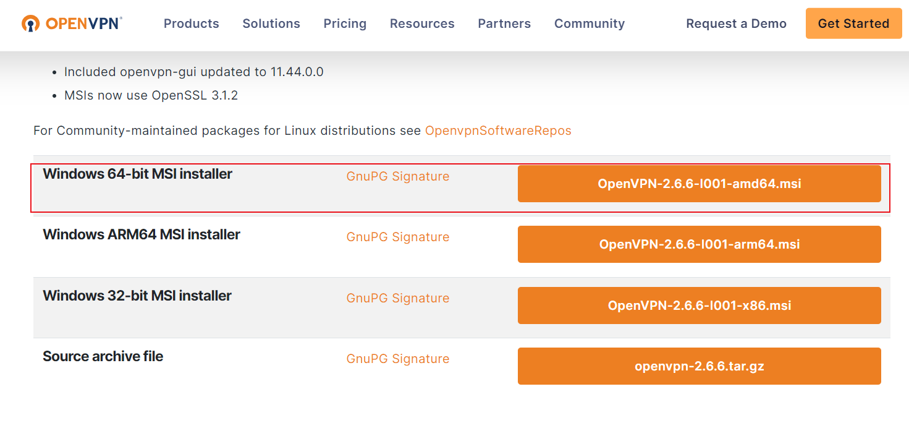
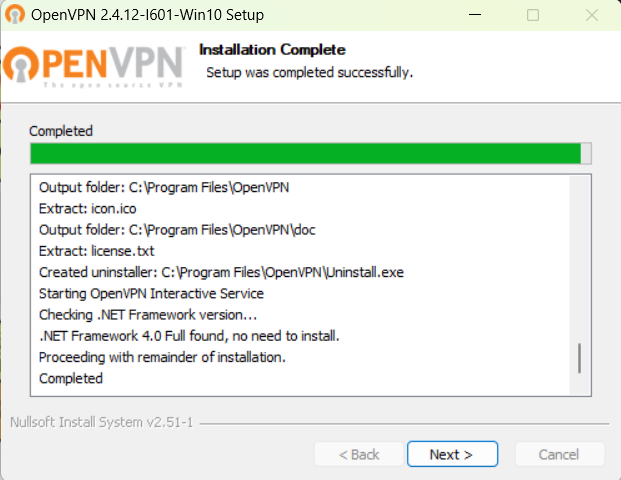
6.7.1.2 Windows客户端配置准备 保持证书到openvpn客户端安装目录
1 2 3 4 5 6 7 8 # 在服务器打包证书并下载发送给Windows客户端
放到Windows客户端默认安装目录下C:\Program Files\OpenVPN\config目录
6.7.1.3 Windows客户端运行openVPN客户端进行连接 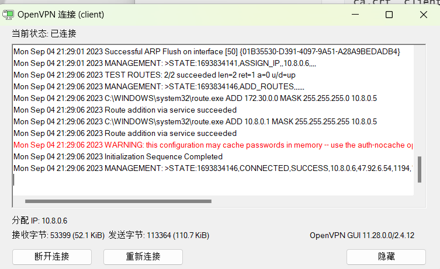
6.7.1.4Windows客户端验证通信 6.7.1.4.1Windows客户端测试访问OpenVPN服务器 Windows服务器到到OpenVPN服务器的连接：
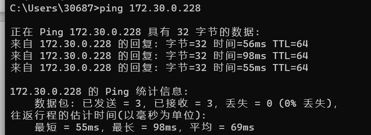
1 2 [root@openvpn -server xiaohexie]# echo net.ipv4.ip_forword = 1 >> /etc/sysctl.conf @openvpn -server xiaohexie]# sysctl -p
6.7.1.4.2 观察OpenVPN服务器日志 1 2 3 4 5 6 7 8 9 10 11 12 13 14 15 16 17 18 19 20 21 22 23 24 25 [root@openvpn-server xiaohexie]# tail -f /var/log/openvpn/openvpn.log
6.7.1.4.3 验证OpenVPN服务器连接状态 1 2 3 4 5 6 7 8 9 [root@openvpn-server xiaohexie]# ss -nt
6.7.1.4.4 验证Windows客户端的IP状态 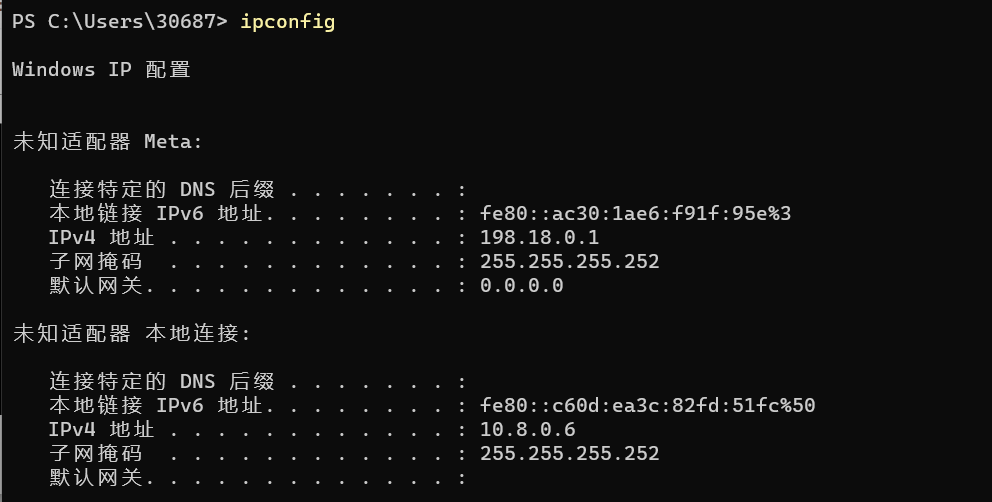
6.7.1.4.5验证Windows客户端的路由表 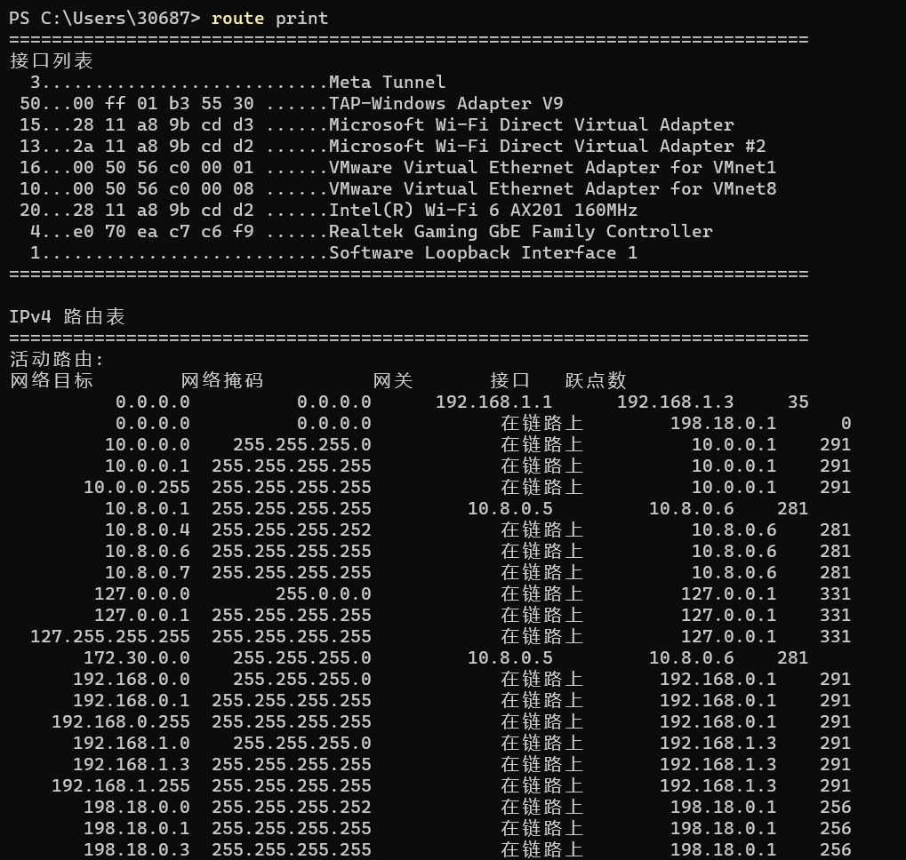
6.8 实现访问VPN服务器内网主机 6.8.1 OpenVPN服务器打开ip_forward功能 1 2 3 4 5 6 7 8 9 10 11 12 13 14 15 16 17 18 19 20 # 在服务器开启ip_forward转发功能
6.8.2 配置实现内网服务器回应外网的请求的路由 6.8.2.1 在每个主机上添加路由 1 2 # 阿里云服务器不支持修改路由
6.8.2.2 在OpenVPN服务器上配置IPtables规则 1 2 3 4 5 6 7 8 9 10 11 12 13 14 15 16 17 # 添加SNAT规则 # [root@openvpn-server xiaohexie]
6.8.2.3 测试 VPN访问内网主机 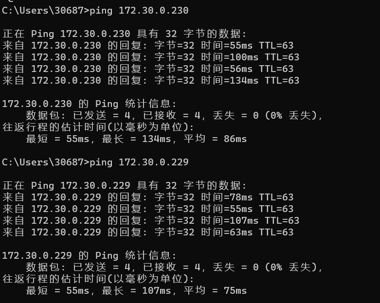
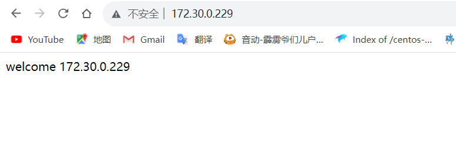
7.mysql如何实现崩溃后恢复？ 1、如果有从节点，可以将从节点提升为主节点
2、可以通过备份数据和二进制日志在新建的数据库上恢复
8.myisam和innodb各自在什么场景使用？ 8.1 myisam存储引擎 myisam存储引擎特点：
不支持事务
表级锁定
读写相互阻塞，写入时不能读，读时不能写
只缓存索引
不支持外键约束
不支持聚簇索引
读取数据较快，占用资源较少
不支持MVCC（多版本并发控制机制）高并发
崩溃恢复性较差
MySQL5.5.5前默认的数据库引擎
myisam存储引擎适用场景：
只读（或者写较少）
表较小（可以接受长时间进行修复操作）
8.2 innodb存储引擎 innodb存储引擎特点：
行级锁
支持事务，适合处理大量短期事务
读写阻塞与事务隔离级别相关
可缓存数据和索引
支持聚簇索引
崩溃恢复性更好
支持MVCC高并发
从MySQL5.5后支持全文索引
从MySQL5.5开始为默认的数据库引擎
innodb存储引擎适用场景：
高并发性
有事务处理需求
对数据完整性和可靠性要求较高